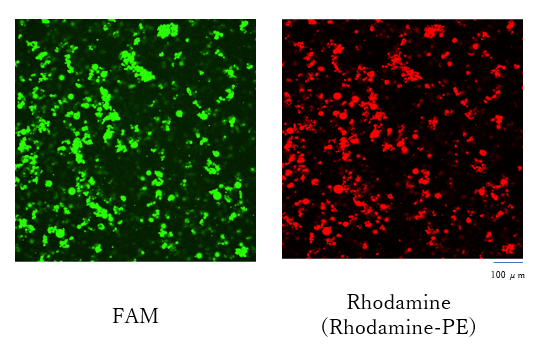

DNA origami is known as an innovative technology that can build various 2D and 3D
nanostructures
using DNA strands. In conventional procedure, DNA origami is folded in bulk solution
such as
in
a test tube. Here, we present our project “SynthePHERE”, which aims at the folding of
DNA
origami nanostructures in a small compartment such as in a liposome.
As a first step, giant unilamellar vesicles (GUVs) containing scaffold and
staple strands
are
prepared. The DNA origami nanostructures are folded in GUVs with the temperature control
of
the
solution. Since scaffold and staple strands are inside of a small reaction system of
GUVs,
faster and efficient DNA origami folding is expected.
Additionally, introduction of staple strands into GUVs through the pores on the membrane
surfaces is carried out. A membrane protein streptolysin O(SLO) is used to form pores
with ≈
27
nm diameter on GUV membrane surfaces. Also, SLO can get sealed when calcium ions are
added.
By
closing SLO pores, scaffold and staple strands are expected to be entrapped in GUVs,
allowing to
fold DNA origami nanostructures inside GUVs.
By introducing different staple strands into a small compartment, various DNA
nanostructures
can
be folded as a response. This input-output system would be applied to liposome-type
molecular
robots that can respond to outer environments, which could be used as drug delivery
system.
「This is the end of this page」
Introduction
Modern robots receive a large amount of information, data and stimuli from external
environments and operate their programmed actions based on received and processed
information. In order for robots to be multifunctional and high-performance, the ability
of mass data processing is essential. In recent years, biomolecules such as DNA, protein
and lipids are well studied and can even be artificially designed.
By combining the functions of various natural or designed biomolecules, construction of
various types of molecular robots and devices have been achieved. These
prototype molecular robots are designed for single or several inputs and corresponding
outputs. However, molecular robots reported until today have not been investigated
enough whether they can handle large amounts of inputs, nor do they have the capacity to
handle such amounts of inputs.
In our first project, we investigated whether it is possible to introduce a large number
of inputs to molecular robots. Liposomes were adopted as the chassis model of molecular
robots and DNA strands were adopted as input signals which were transported through
liposomal membranes. DNA strands were introduced to liposomes through pore-forming
membrane protein, Streptolysin O(SLO)
By using the introduced DNA strands, assembly of DNA origami nanostructures are expected
to be attained as outputs. DNA origami is a nanoscale folding technology that enables
the construction of two- or three- dimensional nanostructures with arbitrary shapes by
using designed DNA strands.
https://www.nature.com/articles/nature04586
Two types of DNA strands, scaffolds and staples are used for the construction of DNA
origami nanostructures. Scaffolds are long single stranded DNA with thousands of bases,
while staples are short (dozen bases) DNA strands that bind to corresponding areas of
scaffolds.
As a second project, we examined whether DNA origami nanostructures can be formed inside
liposomes by introducing material DNA strands and annealing the DNA strands-including
liposomes. After the introduction of DNA strands through SLO pores, the pores were
closed by the addition of calcium ions, which makes the liposomes closed systems. DNA
origami nanostructures were assembled inside the liposomes by conventional annealing
process. The assembled DNA nanostructures were collected by destructing the liposomes
and evaluated by the comparison to the nanostructures assembled in the bulk solution.
Since liposomes provide smaller compartments compared to the bulk environment, folding
DNA nanostructures inside liposomes may provide more efficient assembly of DNA
nanostructures such as in faster time and lower staple concentrations.
Our ultimate goal is to establish a basic technology for the construction of
liposome-type molecular robots that receive a large amount of inputs and provide outputs
corresponding to the input. In our projects, we evaluated the assembly of DNA
nanostructures inside the liposomes with the introduction of material DNA strands. It is
the robust model for the molecular robots that receive a large amount of data and
stimulus. We believe that our project will serve as a milestone for the future
construction of liposomal molecular robots that can accept and process a large amount of
inputs.
Refferences
B. Alberts, Molecular Biology of the Cell, 6th edition (W.W. Norton, 2014).
D. D. Y. Ryu and D.-H. Nam, "Recent Progress in Biomolecular Engineering", Biotechnol. Prog. 16, 2–16 (2000).
M. Hagiya, A. Konagaya, S. Kobayashi, H. Saito, and S. Murata, "Molecular Robots with Sensors and Intelligence", Acc. Chem. Res. 47, 1681–1690 (2014).
K. Shoji and R. Kawano, "Recent Advances in Liposome-Based Molecular Robots", Micromachines 11, 788 (2020).
S. Murata, T. Toyota, S. M. Nomura, T. Nakakuki, and A. Kuzuya, "Molecular Cybernetics: Challenges toward Cellular Chemical Artificial Intelligence", Adv. Funct. Mater. 32, 2201866 (2022).
Y. Sato, Y. Hiratsuka, I. Kawamata, S. Murata, and S. M. Nomura, "Micrometer-sized molecular robot changes its shape in response to signal molecules", Sci. Robot. 2, eaal3735 (2017).
M. Akter, J. J. Keya, K. Kayano, A. M. R. Kabir, D. Inoue, H. Hess, K. Sada, A. Kuzuya, H. Asanuma, and A. Kakugo, "Cooperative cargo transportation by a swarm of molecular machines", Sci. Robot. 7, eabm0677 (2022).
P. W. K. Rothemund, "Folding DNA to create nanoscale shapes and patterns", Nature 440, 297–302 (2006).
S. M. Douglas, H. Dietz, T. Liedl, B. Högberg, F. Graf, and W. M. Shih, "Self-assembly of DNA into nanoscale three-dimensional shapes", Nature 459, 414–418 (2009).
G. Tsuji, T. Sunami, M. Oki, and N. Ichihashi, "Exchange of Proteins in Liposomes through Streptolysin O Pores," ChemBioChem 22, 1966–1973 (2021).
T. Watanabe, Y. Sato, H. Otaka, I. Kawamata, S. Murata, and S.-I. M. Nomura, "DNA Origami “Quick” Refolding inside of a Micron-Sized Compartment," Molecules 25, 8 (2020).
「This is the end of this page」
Design
Since DNA strands are hydrophilic molecules, they cannot be permeated
through the lipid membrane of the liposome. To overcome this, it is
necessary to form molecular transport pathways (pores) to the lipid
membrane surface. Previous researches succeeded in the transportation of
dye molecules, proteins and DNA strands from external environment to
inside environment through lipid membrane of the liposome by using
pore-forming membrane proteins [ref] and pore-shaped DNA nanostructures [ref],
Our project requires forming pores on the liposome membrane that can transport DNA
strands with a
diameter of >2 nm, and then closing the pore. To achieve these, we selected streptolysin
O (SLO)
as a pore-forming material . SLO is a pore-forming membrane protein that can form pores
on lipid
membranes with approximately 27 nm diameter, which is considered large enough to
transport DNA
strands Moreover, SLO can close its pore by adding calcium ions .
In the actual experimental system, the procedure is divided into three
steps; (i)SLO are added to the liposome solution, (ii) following the
addition of DNA strand mixture (iii) and then CaCl2 solution is added. By
addition of SLO to the liposomes in (i), the pore is formed on the liposomal
membrane and the liposome will be able to receive the DNA strands mixed in
procedure (ii). Finally, the SLO pore is closed by CaCl2 solution in (iii).
Through these series of operations, the DNA strand is transported to the
liposome by the SLO pore and a closed system will be formed. The
transportation of DNA strands can be evaluated by observing fluorescence
molecules attached to the DNA strands using a confocal microscope.
Several guidelines were set for designing the DNA origami nanostructures
assembled in our experimental system.
One is to design a three-dimensional DNA origami structure. Previous studies
have shown that DNA origami can be folded more efficiently (faster and with
fewer stapled strands) in micro-sized compartments (droplets) formed with s
urfactants. In this research, two-dimensional structures with triangular or
rectangular shapes were investigated. We expected this efficient folding
would be possible also within liposomes. Moreover, we were interested in
whether this efficient folding could be achieved with a 3D structure, thus
we adopted a three-dimensional shape.
The second point is to design the nanostructures larger than the SLO pore diameter. The
leakage of assembled DNA nanostructures must be avoided. To satisfy this point, the
vertical and horizontal lengths of the structures were designed to be
larger than the SLO pore diameter of 27 nm.
We designed the three-dimensional DNA origami nanostructure of a rectangular
shape shown in Fig.X using cadnano. The approximate size of the nanostructure is 29 x 39
x 10 nm, which was considered to be larger than the SLO pore. Thermodynamic simulations
by Cando suggested that the designed structure had
smaller thermal fluctuations and higher stability (Fig. Y). The cadnano map and sequence
list is
available here.
Fig.X Total design of the DNA origami nanostructures for our project.
(A)(B) Representative 3D model of the designed DNA origami. (A) and (B) show the
front and side views, respectively. (C) Cadnano map of the designed DNA origami.
Fig.1 Total design of the DNA origami nanostructures for our project.
(A)(B) Representative 3D model of the designed DNA origami. (A) and
(B) show the front and side views, respectively. (C) Cadnano map of
the designed DNA origami.
Fig.Y Representation of the thermodynamic simulations. Results were
obtained by using Cando.
Fig.2 Representation of the thermodynamic simulations. Results were obtained by using
Cando.
Refferences
S. Krishnan, D. Ziegler, V. Arnaut, T. G. Martin, K. Kapsner, K. Henneberg, A. R.
Bausch, H. Dietz, and F. C. Simmel, "Molecular transport through large-diameter DNA
nanopores", Nat. Commun. 7, 12787 (2016).
R. P. Thomsen, M. G. Malle, A. H. Okholm, S. Krishnan, S. S.-R. Bohr, R. S.
Sørensen, O. Ries, S. Vogel, F. C. Simmel, N. S. Hatzakis, and J. Kjems, "A large
size-selective DNA nanopore with sensing applications", Nat. Commun. 10, 5655 (2019).
S. Iwabuchi, I. Kawamata, S. Murata, and S. M. Nomura, "A large, square-shaped, DNA
origami nanopore with sealing function on a giant vesicle membrane," Chem. Commun. 57,
2990–2993 (2021).
K. Jahnke, M. Illig, M. Scheffold, M. P. Tran, U. Mersdorf, and K. Göpfrich, "DNA
Origami Signaling Units Transduce Chemical and Mechanical Signals in Synthetic Cells,"
Advanced Functional Material, 2301176 (2023).
G. Tsuji, T. Sunami, M. Oki, and N. Ichihashi, "Exchange of Proteins in Liposomes
through Streptolysin O Pores," ChemBioChem 22, 1966–1973 (2021).
S. M. Douglas, A. H. Marblestone, S. Teerapittayanon, A. Vazquez, G. M. Church, and
W. M. Shih, "Rapid prototyping of 3D DNA-origami shapes with caDNAno," Nucleic Acids
Research 37, 5001–5006 (2009).
C. E. Castro, F. Kilchherr, D.-N. Kim, E. L. Shiao, T. Wauer, P. Wortmann, M. Bathe,
and H. Dietz, "A primer to scaffolded DNA origami," Nat Methods 8, 221–229 (2011).
「This is the end of this page」
Experiments
Optimization and confirmation of DNA origami assembling
Firstly, we optimized the annealing condition (in terms of annealing speed, salt
concentr
ation) of DNA origami nanostructures. As annealing condition candidate, -1°C / min (#1-1
), -6°C / hour (#2-1), and -1°C / hour (#3-1) was adopted.
As MgCl2 concentration candidates,0, 5, 10, 12.5, and 15 mM were chosen. Figure 1 shows
th
e result of agarose gel electrophoresis of DNA origami nanostructures annealed in
various ann
ealing conditions.
Figure 1. Agarose gel electrophoresis analysis of DNA nanostructures
assembled w
ith various annealing conditions and salt concentrations.
Compared to the band of scaffold (M13), bands of the samples annealed in the protocol
#2-1 with 1
5mM MgCl2 and #3-1 with 12.5 and15mM moved more downwards in the gel, suggesting some
structure wa
s formed in these conditions.
As generally longer annealing time is required for 3D DNA origami nanostructures, it was
as we expected that the structural bands d
id not appear in the samples annealed in #1-1 protocol.
Next, we evaluated the samples annealed by #2-1 and #3-1 protocols with higher MgCl2
concentration (Figure 2). The bands of the sample assembled in the higher MgCl2
concentration kept the same place as 15 mM MgCl2, suggesting that 12.5 mM or 15 mM MgCl2
is required for proper assembly.
Figure 2. Agarose gel electrophoresis analysis of DNA nanostructures
annealed by #2-1 or #3-1 with higher MgCl2 concentrations.
Since our project goal is to fold DNA origami nanostructures in liposomes, potential
damage to liposomes such as high temperature is better to be avoided. For this reason,
modified annealing conditions without a hot process of 85°C were investigated. The
modified annealing process is defined as protocol #2-2 and #3-2, respectively. Figure 3
shows the electrophoresis result of the DNA origami assembled by #2-1, #2-2, #3-1, or
#3-2 protocols.
Figure 3. Agarose gel electrophoresis analysis of DNA nanostructures
annealed by #2-1, #2-2, #3-1, or #3-2 protocols.
The certain formation of the DNA origami nanostructures was evaluated by AFM
observation. Rectangular shapes were observed in both samples annealed by #2-2 and #3-2,
supporting the successful formation of the designed DNA origami nanostructures.
Fig. 4 Representative AFM observation images of the DNA origami
nanostructures. The MgCl2 concentration was 15 mM in both annealing conditions.
As a result of these experiments, the optimal annealing condition in the liposomes was
set to be #2-2 and the optimal salt concentration was determined as 15mM. The DNA
origami assembly in the liposomes described above was carried out by this protocol.
Formation of DNA origami inside liposome
1. Preparing heat resistant liposome
In order to fold DNA origami structure in liposomes, preparing heat resistant liposomes
that can retain the structure during the annealing process was required. To achieve
this, we prepared liposomes with the certain composition of several lipids and compared
them in terms of forming rate and heat resistance at 60℃ to investigate the optimal
lipid composition of heat-resistant liposomes. Anionic lipid POPG, as well as
cholesterol and POPC was used to prepare heat-resistant liposomes. According to the
research, adding POPG is effective for creating stable GVs at high temperatures. figure
5 and 6 shows liposomes with different lipid composition after the annealing process
observed
with confocal laser scanning microscopy. While liposomes made only with cholesterol and
POPC were aggregated after the annealing process, liposomes with POPG were not. This
result suggests that POPG is effective in preparing heat resistant liposomes.
Fig. 5 liposomes with POPG observed by confocal microscopy

Fig. 6 liposomes without POPG observed by confocal microscopy
2. Folding DNA origami nanostructures in heat resistant liposomes
By using heat-resistant liposomes, the DNA origami assembly in the liposomes was carried
out. M13 scaffold and staple DNA strands were added to the inner solution of liposomes,
and the DNA-containing liposome solution was annealed the same as DNA origami assembly
in a PCR tube. After the annealing process, the liposome membrane was destructed by
vortex process and the samples were evaluated by agarose gel electrophoresis.
First, we investigated whether the DNA origami in the liposome can be observed in the
agarose gel electrophoresis (Fig. 7). As a positive control, the liposome solution
including pre-annealed DNA origami was prepared and observed with the membrane
destruction. Moreover, TritonTMX-100 (TX-100) was used for certain membrane destruction.
Fig. 7 The agarose electrophoresis analysis of the liposome solution
destructed by various conditions. “Annealing in Lipo” means the DNA origami was
annealed in the liposome. “Annealing in Bulk” means the DNA origami was annealed
in bulk solution, then included inside the liposome. The two images are obtained
from the same gel at different exposure times.
The bands are observed in the liposome solution samples. Even in the liposome solution
sample without vortex process, the band was observed. It may be because the addition of
a loading buffer or voltage application might have destructed liposome membranes.
However, neither of the bands of the liposome samples containing DNA origami annealed in
a solution nor in the liposome did not match the bands of DNA origami annealed in bulk.
We considered that the fragments of liposome membranes, addition of KCl or remaining
TX-100 may have affected the observed result of electrophoresis. To avoid these factors,
a purification process using centrifugal filters (Amicon Ultra) was performed. Fig. 8
shows the electrophoresis result of the samples with the purification process.
Fig. 8 The agarose electrophoresis analysis of the DNA origami collected
from various conditions. In the caption of the annealing column, “None” means
that the liposome contained M13 and staple strands but was not annealed. “Pre”
means the DNA origami was annealed in bulk solution, then included inside the
liposome. “In lipo” means the DNA origami was annealed in the liposome.
The Amicon filters successfully removed the excess DNA strands. In the KCl added
samples, the bands moved slightly to the top. It might be because the total charge of
the DNA nanostructure has changed by the addition of monovalent cation. It was also
suggested that Triton-X 100 doesn’t affect the electrophoresis bands.
As an important point, the band place of the pre-annealed DNA origami nanostructures
collected from the liposome (lane of “Pre”) matched with the nanostructures assembled in
the bulk solution. From this point, the band of DNA origami assembled in the liposome is
expected to appear in the same position when the origami is folded as designed.
However, the band of the DNA origami annealed in the liposome did not appear to the same
place of the band of the origami annealed in a bulk solution. Rather, it matched with
the one with just a mixture of scaffold and staple strands that was not annealed.
As the final experiments in this BIOMOD term, we changed some experiment conditions as
follows and tried the assembly of DNA origami again;
(i) Anneal the inner solution to investigate the effect of sucrose on DNA origami
folding.
(ii) Increase staple ratio to enhance the possibility of correct DNA origami assembly.
(iii) Reduce the scaffold and staple concentration to avoid a risk of “overcrowded”
situation in liposomes that might affect the folding.
(iv) Add twice amount lipids in liposome preparation to increase the reaction field for
DNA origami folding.
Fig. 9 The agarose electrophoresis analysis of the DNA origami annealed in
various conditions. In the caption of the annealing column, “in bulk” means the
DNA origami was annealed in bulk solution, while “In lipo” means the DNA origami
was annealed in the liposome. When the DNA origami was annealed with sucrose,
the concentration was 300 mM. The two images are obtained from the same gel at
different exposure times.
The band place of DNA origami annealed with 300 mM sucrose did not match the band of DNA
origami annealed in normal bulk solution. Rather, the band place is the same as the
sample of the mixture of scaffold and staple that was not annealed. The position of the
bands did not change under conditions where sucrose was removed by purification. These
results suggest that DNA origami is not folded as designed under the condition with
sucrose.
Further investigation and experimentation will be required to fold DNA origami in
liposomes, such as investigating the effect of sucrose on folding and preparing
liposomes by the hydration method.
We planned several plans to improve the folding of DNA origami. Our first plan was to
increase the ratio of staple strands to scaffold strands and the second plan was to
reduce the concentration of scaffold and staple strands. Moreover, negative effects
brought by sucrose in liposomes were considered. Figure 9 shows the result of
electrophoresis carried out to test our hypothesis.
Liposomes with scaffold and staple strands were annealed and evaluated by
electrophoresis. However, the result didn’t indicate DNA origami folding in liposomes.
We have changed conditions as follows to investigate whether it is possible to fold DNA
origami in liposomes.
1.inner solutions were annealed to investigate the effect of sucrose on DNA origami
folding.
2.Increase staple ratio to scaffold ratio to enhance the possibility of DNA origami
folding
3.Reduce scaffolds and staples concentration to avoid risks by overcrowded situations in
liposomes that might negatively affect the folding.
4.Add twice more lipids to stick to the protocol from previous research.
The results of the electrophoresis have shown that the band of DNA origami annealed in a
solution with sucrose were observed to be in the same location with the band of
unannealed scaffold and staple strands. This has shown that DNA origami were not folded
in a solution with sucrose. Also,it was observed that the DNA origami were not folded in
liposomes neither.
These results suggest that sucrose negatively affects DNA origami folding or affect the
result of electrophoresis.
In order to test our hypothesis, investigation using AFM will be necessary.
These DNA origami folded in conditions written above were investigated by
electrophoresis.
The results of the electrophoresis have shown that the band of DNA origami annealed in a
solution with sucrose were observed to be in the same location with the band of
unannealed scaffold and staple strands. This has shown that DNA origami were not folded
in a solution with sucrose. Also,it was observed that the DNA origami were not folded in
liposomes neither.
These results suggest that sucrose negatively affects DNA origami folding or affect the
result of electrophoresis.
In order to test our hypothesis, investigation using AFM will be necessary.
Materials and methods
Materials and reagents
All staple strands and FAM-modified DNA strands were purchased from Eurofins Genomics
Tokyo (Tokyo, Japan). Single-stranded M13mp18 viral DNA was purchased from Tilibit
Nanosystems (Garching, Germany) via Eurofins. MgCl2, glucose, and sucrose, were
purchased from Kishida Chemical (Osaka, Japan). TAE was purchased from Sigma-Aldrich
Japan (Tokyo, Japan). EDTA was purchased from Kanto Chemical (Tokyo, Japan) KCl and
CaCl2 were purchased from Nakalai Tesque (Kyoto, Japan). POPC was purchased from NOF
Corporation (Tokyo, Japan). POPG was purchased from Avanti Polar Lipids (AL, USA).
Cholesterol and boric acid were purchased from FujiFilm Wako Pure Chemical Corporation
(Osaka, Japan). Triton-X100 was purchased from Alfa Aesar (MA, USA, Cat. No: A16046).
Streptolysin O was purchased from BioAcademia (Osaka, Japan). Ultrapure water
(resistivity 18.2 MΩ cm) was supplied by Direct-Q UV3 (Merck Millipore).
Design and assembly of DNA origami nanostructures
DNA origami nanostructures are designed and simulated by using cadnano software and
canDo simulator, respectively. The raw json data and sequence list is available from
this link. Before the structural formation, the concentration of each staple DNA strand
was measured by using Nanodrop 2000c (Thermo Fisher Scientific). The formation of the
DNA nanostructures was carried out by mixing 10 nM of scaffold DNA (m13mp18 ssDNA) with
50 nM of staple strands in the folding buffer containing 1x TAE (40 mM Tris, 1 mM EDTA
(pH 8.3)) and various concentrations of MgCl2 (and 100 mM KCl, if described). The
mixture was annealed by one of the annealing conditions as follows:
#1-1: Heated to 85°C for 20 sec, then cooled from 60°C to 25 °C by -1°C / min
#2-1: Heated to 85°C for 20 sec, then cooled from 60°C to 25 °C by -6°C / hour (-0.1°C /
min)
#3-1: Heated to 85°C for 20 sec, then cooled from 60°C to 25 °C by -1°C / hour (-0.1°C /
6 min)
#2-2: Heated to 60°C, then cooled from 60°C to 25 °C by -6°C / hour (-0.1°C / min)
#3-2: Heated to 60°C, then cooled from 60°C to 25 °C by -1°C / hour(-0.1°C / 6min)
After annealing, the samples were stored in a temperature-controlled room at 25 °C.
Agarose gel electrophoresis
The 1% agarose gel was prepared by dissolving an agarose tablet (Cat. No: AG13, Nippon
Gene, Tokyo, Japan) by running buffer. The electrophoresis running buffer contained x0.5
TBE (50 mM Tris, 50 mM borate and 5 mM EDTA) and 5 mM MgCl2. The electrophoresis sample
was prepared by mixing a loading buffer (Takara Bio, Shiga, Japan, Cat. No: 9156).
Electrophoresis was performed at 50 V for 90 min in a temperature-controlled room at
25 °C. After electrophoresis, the gel was stained with SYBR Gold for 5 min and washed
with ultrapure water for 3 min. Images were obtained using a gel imager (LuminoGraph I,
ATTO, Tokyo, Japan).
AFM observation
AFM observation was carried out on the freshly cleaved mica surface under dry
conditions. To fix the DNA origami nanostructures on the mica surface, 5 µL of DNA
origami solution was dropped onto the mica, followed by the addition of 10 µL of folding
buffer (1xTAE, 15 mM MgCl2) and incubated for 5 min. After incubation, the mica surfaces
were rinsed with a total volume of 150 µL ultrapure water and finally well-dried by
gentle air blowing. AFM measurement was performed using Multimode 8 (Bruker, MA, USA)
with SCANASYST-AIR probe (Bruker).
Preparation of the liposome (giant unilamellar vesicle)
A lipid mixture in chloroform was prepared by mixing POPC, POPG and cholesterol in
the described components. A lipid firm was prepared on a glass tube by evaporating a 30
μL lipid mixture solution in a nitrogen gas atmosphere and then left to stand for at
least one night. Afterwards, an aliquot of mineral oil (Sigma-Aldrich, Cat. No:
330760-1L (heavy)) was mixed with the lipid film mentioned above, and the lipid was
dissolved in mineral oil by sonication for 60 min at 50 °C. Then, 20 μL of the liposome
internal buffer LI (1x TAE, 15 mM MgCl2, 300 mM glucose, (and 100 mM KCl, if described))
was added to the mixture and vortexed for 1 min to prepare W/O emulsion. The emulsion
was added upon 300 μL of the liposome external buffer LO (1x TAE, 15 mM MgCl2, 300 mM
glucose (and 100 mM KCl, if described)) kept in a tube and centrifuged at 10,000 x g for
10 min. The precipitated liposomes were carefully collected by inserting the pipet chip
from top of the tube. The liposomes were observed and evaluated by using a confocal
microscope (Nikon AX, Nikon solutions, Tokyo, Japan)
Assembly of DNA origami inside the liposome
A lipid mixture was prepared by POPC, POPG and cholesterol at a molecular ratio of
3:1:6 and a lipid firm was prepared by the same method described above. To assemble DNA
origami nanostructures inside liposomes, 10 nM of M13 scaffold, 50 nM of staple strands,
and 100 mM KCl was added to the buffer LI, while 100 mM KCl was added to the buffer LO.
The liposome containing scaffolds and staples is prepared by the same method as the
previous section. A total of 50 μL liposome solution was dispensed into a PCR tube, then
the sample was annealed with the protocol of #2-2 described above.
Liposome destruction and structural evaluation
Before the electrophoresis, the annealed liposome was destructed by the vortex
operation for each 3 min. For more certain disruption of liposome membranes, some
samples were vortexed with TritonTMX-100 (TX-100). When TX-100 was mixed to the liposome
solution, a total of 5 μL of TX-100 solution (containing 40 mM TX-100, 1x TAE, 15 mM
MgCl2) was mixed to the 25 μL liposome solution before the vortex operation. The final
TX-100 concentration was ≈ 6.7 mM. The membrane destructed liposome solution was applied
with loading buffer and electrophoresis was performed as same methods described above.
Filter purification
A part of samples including DNA origami nanostructure and destructed liposome was
purified with a 100 kDa MWCO (molecular weight cut-off) centrifuge filter (Amicon Ultra,
Merck Millipore) to remove excess staple strands and lipid membrane fragments. First, 20
μL DNA origami solution or 30 μL liposome solution was injected to the filter unit with
a total of 450 μL purification buffer (1x TAE, 10 mM MgCl2). The filter units were
centrifuged at 10000 x g for 5 min. After discarding the solution on the lower side of
the filter unit, a total of 450 µL of buffer was added to the filter unit and
centrifuged again. The filtered solution was collected by reversing the filter and
centrifugation at 1000 x g for 2 min. After purification, the MgCl2 concentration was
immediately recovered by adding a buffer (1xTAE, 200 mM MgCl2)
Streptolysin O (SLO) pore formation assay
A total of 3μL liposome solutions containing 10 nM scaffold (M13mp18) attached with
AMCA-modified DNA strands (Sangon Biotech, Shanghai, China), 2μL of outer buffer
containing 1 μM FAM-modified DNA strand, 2μL of SLO diluted in outer solution and 3 μL
outer solution of liposomes were gently mixed in a PCR tube. The final SLO concentration
was 0.1 mg / mL. After mixing each solution, the sample was incubated for >1 hour to
form pores on the lipid membrane of liposomes. Pore formation was evaluated by observing
the fluorescence of each DNA strand by a confocal microscopy.
「This is the end of this page」
Conclusion
As a conclusion, our project has been partially achieved.
We designed a three-dimensional DNA origami nanostructure and confirmed their structural
formation. Liposomes were prepared to survive in the heat of annealing and the function
of the SLO pore was evaluated. Furthermore, we attempted to anneal DNA origami inside
liposomes.
In this BIOMOD timeframe, we could not confirm the correct assembly of the DNA origami
nanostructures inside the liposome. We have identified that sucrose prevents the
intended folding of DNA origami. We prepared giant vesicles by centrifugal method, but
we might prepare liposomes with lower sugar concentrations by other methods such as
electroformation method. Also, investigations on the influence of sugars on the folding
of DNA nanostructures may provide us with interesting insights.
「This is the end of this page」
Future
The ultimate goal in our project is to construct “SynthePHERE”, which is an input-output
system in which various DNA nanostructures can be folded as a response to the
introduction of different staple strands into small compartments of liposomes.
If we could complete the project, we could demonstrate SynthePHERE as a robust model for
molecular robots that recognizes a hundrets of different inputs. Furthermore, faster 3D
DNA origami nanostructure assembly could be achieved. This may show a new method for
chemical reactions carried out in small compartments.
To add further features to liposomes, two different experiments are planned. Our first
endeavor is going to be folding functional DNA origami in liposomes. We have designed a
unique DNA origami structure called “DNA storehouse”
Fig 1. A 3D model of the “DNA storagehouse”
DNA storehouse was designed to function as a high-density storage for DNA strands using
DNA strand displacement reaction. As a result of the reaction, DNA strands that work as
an oligonucleotide therapeutics are released when certain invading strands are added.
DNA storehouse is expected to be applied to gene therapy as a new technology that
enables efficient drug delivery to certain body areas.
Furthermore, we are considering establishment of a method for DNA replication in
liposomes. This would enable the production of artificial life models made of nucleic
acids.
All of the described above is the ultimate goal and will no doubt take a great deal of
time and effort to realize. However, these planned experiments might be a milestone for
us to achieve our ultimate goals, which is to apply this system to liposome-type
molecular robots that deliver a drug to certain body areas (Fig. 2).
「This is the end of this page」
Team
Kengo Kurematsu
Role:Team Leader, Writer&Presenter
Motto:“Always put yourself below average.”
Rin Kunisada
Role:Team Subleader, Chief Writer&Presenter
Motto:“Whatever.”
Kazuki Imai
Role:Chief Video Editor
Motto:“Intelligence without ambition is a bird without
wings"- Salvador Dali
Taro Nishino
Role:Chief Web Designer
Motto:“After all, tomorrow is another day.”
Masamine Ando
Role:Video Editor
Motto:“Thou shouldst eat to live; not live to eat.”